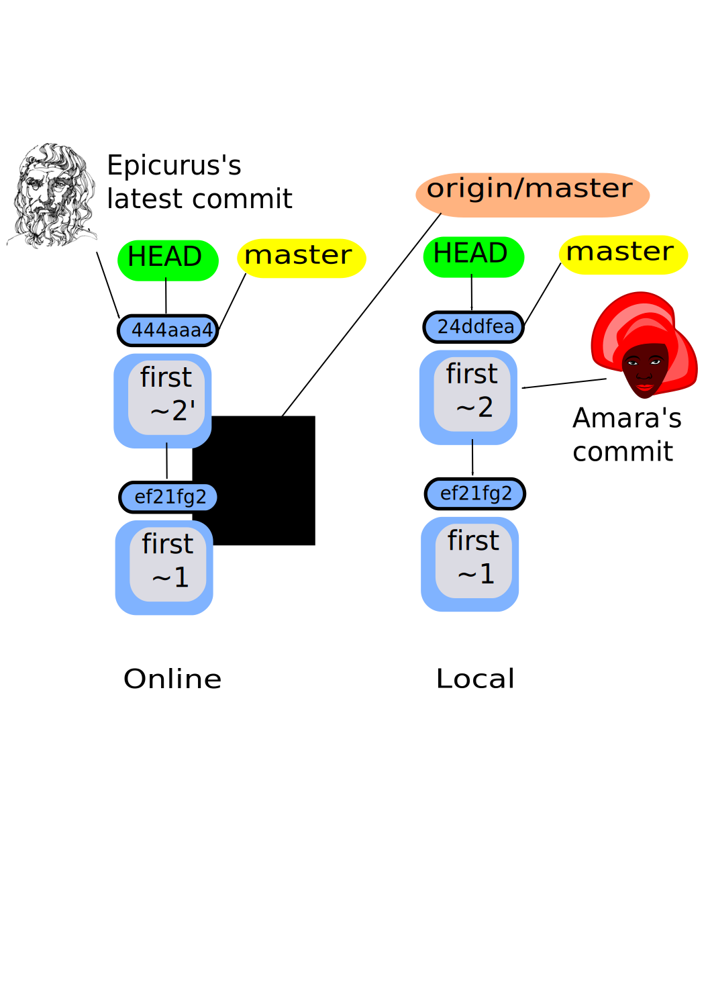

graphql
Cronologia
Un poco de historia
- Años 90: COM, Corba, RMI para comunicación distribuida
- Año 1998: Nace SOAP como protocolo de acceso a objetos
- Año 2000: Roy Fielding crea REST APi
- Año 2015: Facebook crea Graphql
On-line repos!
git remote 
- The whole thing is about collaboration!
gitdoes not have a central repository likeSVN- Repositories have to be uploaded for sharing
- All repositories are equal
- Isolated environment - manual synchronization
- Supported protocols - http, https, git, filesystem
- Creates pointers like
branch, pointing to other repo's commit objects git remote- Create connections & give nick names to online repos$ git remote add forU https://github.com/papadako/git-a-little-tale.git- Remote pointers are updated when we have network traffic